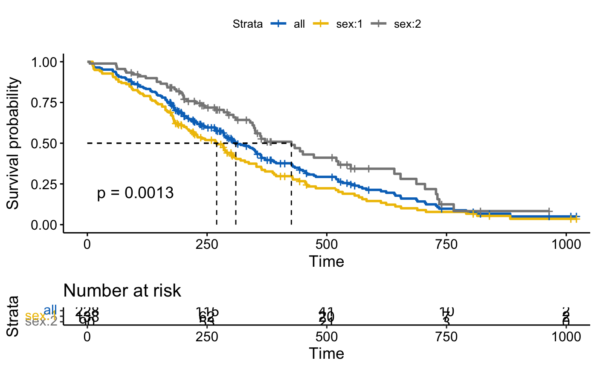

Add Survival Curves of Pooled Patients onto the Main Plot
ggsurvplot_add_all.RdAdd survival curves of pooled patients onto the main plot stratified by grouping variables.
ggsurvplot_add_all(fit, data, legend.title = "Strata", legend.labs = NULL, pval = FALSE, ...)
Arguments
| fit | an object of class survfit. |
|---|---|
| data | a dataset used to fit survival curves. If not supplied then data will be extracted from 'fit' object. |
| legend.title | legend title. |
| legend.labs | character vector specifying legend labels. Used to replace the names of the strata from the fit. Should be given in the same order as those strata. |
| pval | logical value, a numeric or a string. If logical and TRUE, the p-value is added on the plot. If numeric, than the computet p-value is substituted with the one passed with this parameter. If character, then the customized string appears on the plot. See examples - Example 3. |
| ... | other arguments passed to the |
Value
Return a ggsurvplot.
See also
Examples
library(survival) # Fit survival curves fit <- surv_fit(Surv(time, status) ~ sex, data = lung) # Visualize survival curves ggsurvplot(fit, data = lung, risk.table = TRUE, pval = TRUE, surv.median.line = "hv", palette = "jco")# Add survival curves of pooled patients (Null model) # Use add.all = TRUE option ggsurvplot(fit, data = lung, risk.table = TRUE, pval = TRUE, surv.median.line = "hv", palette = "jco", add.all = TRUE)